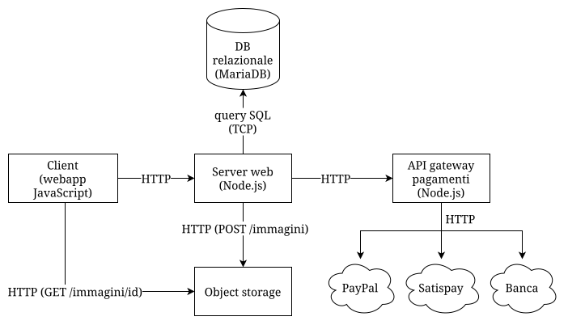

Si propone un sistema informatico con le seguenti componenti:
- Client: interfaccia utente per dell'applicazione, utilizzabile da browser.
- Server web: backend applicativo, gestisce la logica di business e la base di dati.
- DB relazionale: database per la memorizzazione dei dati strutturati (utenti, prodotti, ordini...).
- Object storage: sistema di archiviazione per salvare le immagini dei prodotti.
- API gateway pagamenti: servizio intermedio che si occupa di interfacciarsi con i servizi esterni di pagamento.

Client
Applicazione MPA (multiple page application) implementata con HTML, CSS e JavaScript (senza utilizzare nessun framework JavaScript). Famework come React e Vue facilitano il lavoro dei programmatori ma introducono una complessità nascosta e non sempre giustificata. Si é scelto di evitarne l'utilizzo per semplicità ed efficienza, considerando anche che l'interfaccia grafica dell'applicazione non sarà particolarmente complicata.
Server web
Il nucleo centrale del backend, si occupa di comunicare col client (in questo caso il browser) e coordinare il lavoro di tutte le altre parti del backend. Costruisce le pagine HTML dinamiche che vengono mandate al client, gestisce l'autenticazione, il database, la comunicazione con il gateway pagamenti e con l'object storage.
Si è scelto di implementarlo con Node.js, che permette di gestire un elevato numero di connessioni simultanee grazie alla sua architettura non bloccante basata su event-loop. Inoltre utilizzare JavaScript sia sul backend che sul frontend può essere vantaggioso, in quanto agli sviluppatori è richiesto di conoscere un solo linguaggio.
DB relazionale
Database MariaDB che persiste i dati necessari al funzionamento dell'applicazione come ad esempio: le informazioni relative agli utenti, gli ordini, il catalogo dei prodotti in vendita (con URL delle immagini associate), ecc...
Si è scelto un db relazionale, piuttosto che un db NoSQL, perchè:
- i dati da persistere sono ben strutturati, non c'è bisogno della flessibilità di un db NoSQL,
- i db relazionali forniscono maggiori garanzie di integrità e consistenza dei dati.
Object storage
Servizio dedicato alla conservazione dei file binari delle immagini dei prodotti. Nel database relazionale vengono salvati unicamente i percorsi (URL) delle immagini, mentre i file fisici risiedono nello storage.
Salvare i file nell'object storage anziché nel database è un approccio migliore per diversi motivi:
- evita l'aumento sproporzionato della dimensione del database e non degrada le prestazioni delle query,
- garantisce la scalabilità nella gestione dei contenuti multimediali,
- permette al client di scaricare le immagini direttamente, senza passare dal web server alleggerendo il suo carico di richieste.
API gateway pagamenti
Componente intermedio che espone al server web un'unica API standardizzata per la gestione delle transazioni. Si occupa di tradurre le chiamate generiche del backend nei formati specifici richiesti dai singoli provider (PayPal, Satispay, rete bancaria).
I vantaggi principali di questo approccio sono:
- disaccoppia il server web dalle specifiche tecniche dei fornitori esterni, mantenendo pulita la logica di backend,
- facilita l'aggiunta di nuovi metodi di pagamento o la modifica di quelli esistenti senza dover riadattare l'intera applicazione.